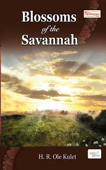
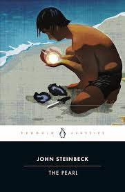

1.blossoms of the savannah
blossoms of the savannah is an account of two siters,taiyo and resian,who are not onlyon the
verge of womanhood, but are torn between their personalambitions and humiliating duty to
nasilatradition.their relocaton to their rural home heralds a cultural alienation born of their refusal to
succumb to female genital mutilation and early marriages.inm pursuit of delicate and elusivesocial-economic
and cultural balance in nasila,ole kaelo, the girls father, is ensnared by a corrupthell-bent
extortionist,oloisudori lonkinyaa.to extricatehimself, ole kaelo sends his daughters into a flat-spin
labyrinth from which they have to struggle to wriggle out. in this narrative, the authorcaptures the
reader's imagination as he traces the girls excruciatingly painful steps to victory - book jacket.
source:publisher.
published:2008
author:henry r ole kulet

2.a doll's house
a doll's house is a three-act play written by norwegian playwright Henrik ibsen .it premiered at
the royal theartre in copenhagen ,denmark, on 21 december1879, having published earlier that month. the play
is set in a norwegian town circa 1879.the play is significant for the way it deals with the fate of a
married woman who ,who at the time in norway lacked reasonable opportunities for self fulfillment in a male
dominated world , despite the fact that lisben denied it was his intent to write a feminist play.
author:henrik-ibsen
publisher:authors republic
published:2022.

3.siku njema
siju njema is a swahili novel written by the kenyan author, ken walibora .the novel was
published in 1996 and written in the first person .the book deals with the life of a young man,msanifu kombo
who is born in tanga,Tanzania and who faces family hardships with his single mother, who is a talented
singer of taarab
originally published:1996
author: ken walibora
original language:swahili

4.the pearl
the pearl is a novella by the american author john steinbeck .the story,first published in 1947
,follows as a pearl diver , kino, and explores man's purpose as well as greed defiance of societal norms and
evil
originally published:1947
author:john steinbeck
genres:novel
language:english
illustrator:jose clemente orozco
